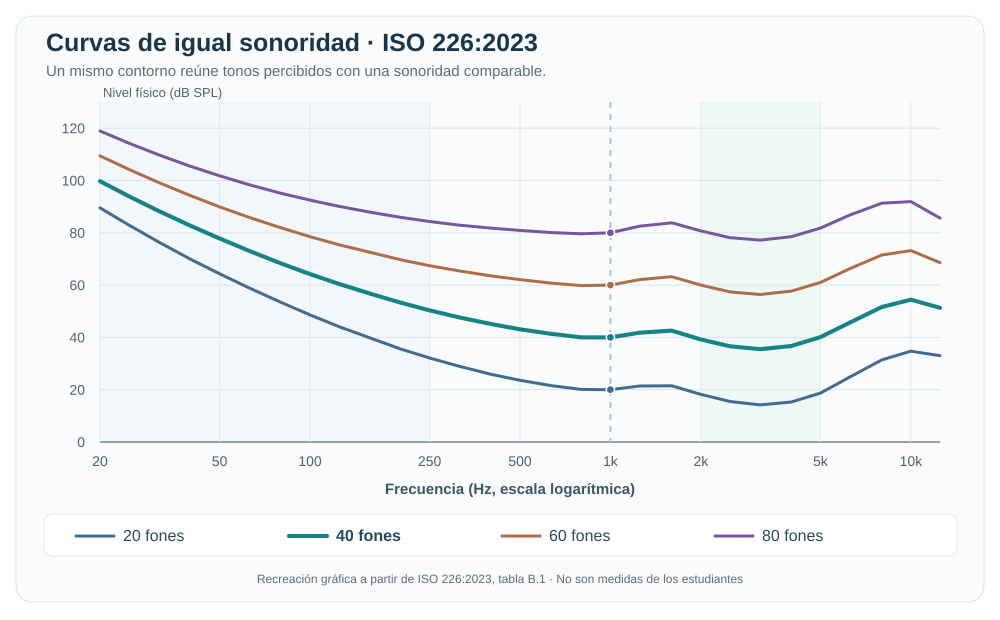
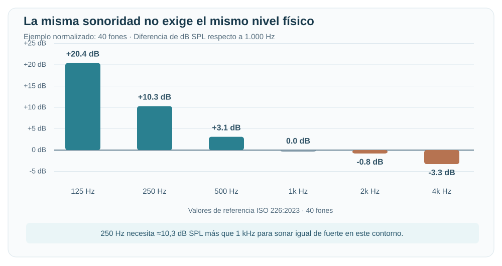

Sesión 12B: ¿Escuchamos igual todas las frecuencias?¶
Tema: introducción a la psicoacústica y a las curvas de igual sonoridad.
Pregunta central: ¿por qué un tono grave puede parecer más débil que otro de frecuencia media aunque ambos tengan el mismo nivel físico?
Al terminar podrás: reconocer el rango audible humano aproximado, explorar cómo cambia la percepción al variar la frecuencia de un oscilador sinusoidal, distinguir frecuencia de sonoridad e interpretar las curvas de igual sonoridad mediante una práctica auditiva sin micrófono de medición.
Antes de empezar: ¿qué frecuencias puede escuchar el ser humano?¶
En personas jóvenes con audición normal, se suele utilizar como referencia un rango aproximado de 20 Hz a 20.000 Hz (20 kHz). Este no es un límite idéntico para todas las personas: la sensibilidad auditiva varía con la edad, la frecuencia y el nivel del sonido. Fuente: The Audible Spectrum, NCBI Bookshelf.
| Región aproximada | Frecuencias | Sensación habitual |
|---|---|---|
| Infrasonidos | Por debajo de 20 Hz | Fuera del rango tonal audible humano típico. |
| Graves | 20–250 Hz | Bombo, bajo, sensación de profundidad. |
| Medios | 250–4.000 Hz | Gran parte de la información de voces e instrumentos. |
| Agudos | 4.000–20.000 Hz | Brillo, detalles y componentes de alta frecuencia. |
| Ultrasonidos | Por encima de 20.000 Hz | Fuera del rango tonal audible humano típico. |
Estos límites entre graves, medios y agudos son orientativos, no divisiones fisiológicas exactas.
Demostración con un oscilador sinusoidal¶
Una onda sinusoidal tiene una sola frecuencia y nos permite relacionar directamente los Hz con la altura que percibimos: al aumentar la frecuencia, el tono tiende a percibirse más agudo.
Utiliza este oscilador para explorar frecuencias, no para establecer un umbral auditivo individual. El deslizador continuo abarca de 10 a 25.000 Hz e incluye infrasonidos (10 y 15 Hz) y ultrasonidos (22.000 y 25.000 Hz). Ahora el navegador intenta generar también los tonos de estas regiones, pero muchos equipos no pueden reproducirlos físicamente y algunos navegadores limitan las frecuencias más altas. No significa que esos tonos deban ser audibles ni sirve para determinar los límites auditivos de una persona.
Procedimiento breve:
- Baja el volumen físico del equipo casi al mínimo y pulsa «🔊 Probar sonido a 1.000 Hz». Si no se oye, revisa la salida de audio, el volumen del sistema y si la pestaña del navegador está silenciada. Después ajusta el volumen físico solo hasta una escucha suave y cómoda.
- Utiliza el control Volumen del oscilador para disminuir el nivel si lo necesitas y pulsa «Fijar volumen para comparar».
- Escucha brevemente 125, 250, 500, 1.000, 2.000, 4.000, 8.000 y 12.000 Hz sin volver a aumentar el volumen. Luego pulsa «Explorar deslizando · 5 s» y mueve el deslizador continuo: el tono cambiará de frecuencia mientras suena. Selecciona también 10, 15, 22.000 y 25.000 Hz para intentar generar infra y ultrasonidos; en muchos sistemas no se escucharán o no podrán generarse, y no debes subir el volumen para buscarlos.
- Para las ocho frecuencias centrales de la práctica (125–12.000 Hz), registra «Lo distinguí» o «No lo distinguí». Si no escuchas una frecuencia, no subas el volumen para forzar su detección. Los infrasonidos y ultrasonidos son una demostración de generación de señales, no deben registrarse ni interpretarse como una prueba de audición.
🎹 Abrir el oscilador en pantalla completa
Si el oscilador no suena: prueba primero 1.000 Hz con el botón de comprobación; abre el enlace en pantalla completa, confirma que la pestaña no esté silenciada y que el sistema utilice la salida de audio correcta. No intentes arreglarlo subiendo al máximo el volumen.
Escucha responsable y límites de la demostración
No es una audiometría ni una prueba para decidir «hasta qué frecuencia oye cada estudiante». Si un tono no se distingue, pueden influir el nivel fijo utilizado, la respuesta de los auriculares, el parlante, la sala y otros factores. El control de volumen de la herramienta es digital, no mide los dB SPL que llegan al oído.
En frecuencias inferiores a 20 Hz, los parlantes convencionales pueden emitir distorsión o vibraciones en lugar de reproducir fielmente el seno; en frecuencias superiores a 20.000 Hz, puede no haber salida acústica o el navegador puede bloquearla según su frecuencia de muestreo. El motor intenta 96 kHz para ampliar el margen digital, pero eso no garantiza una reproducción ultrasónica real. Mantén un volumen físico bajo, evita escuchas largas, no lo eleves para buscar tonos inaudibles y detente si hay molestias o zumbidos. Consulta las recomendaciones de escucha segura de la OMS.
Para conversar: ¿qué cambió principalmente al subir la frecuencia: la altura o la sonoridad? ¿Podemos afirmar que un estudiante tiene un límite auditivo determinado solo por este experimento?
1. De la acústica a la percepción¶
En las clases anteriores estudiamos fenómenos físicos del sonido: frecuencia, longitud de onda, decibelios y propagación. Ahora añadimos la experiencia de quien escucha.
La psicoacústica estudia cómo percibimos los sonidos y relaciona sus características físicas con nuestras sensaciones auditivas.
| Magnitud física | Lo que percibimos |
|---|---|
| Frecuencia (Hz) | Principalmente, la altura de un tono (grave o agudo). |
| Nivel de presión sonora (dB SPL) | Influye en la sonoridad percibida, es decir, qué tan fuerte nos parece. |
| Espectro y evolución temporal | Contribuyen al timbre de un sonido. |
Dos ideas diferentes
Frecuencia no es sonoridad: un sonido agudo no tiene por qué ser más fuerte que uno grave. La sonoridad depende del nivel, la frecuencia y otros factores perceptivos.
2. El oído no tiene la misma sensibilidad en todas las frecuencias¶
Imagina dos tonos puros, uno de 250 Hz y otro de 1.000 Hz, medidos con el mismo nivel de presión sonora. No necesariamente se escucharán igual de fuertes.
En términos generales:
- A niveles relativamente bajos, necesitamos un nivel físico mayor en los graves para que parezcan tan fuertes como un tono de referencia de frecuencia media.
- El oído humano suele mostrar una sensibilidad relativamente elevada en la región de aproximadamente 2.000 a 5.000 Hz.
- Nuestra sensibilidad cambia con la frecuencia, el nivel de escucha y las características de cada persona.
¿Qué son las curvas de igual sonoridad?¶
Son curvas que muestran qué niveles de presión sonora deben tener diferentes tonos puros para que las personas los perciban con una sonoridad semejante.
Se conocen históricamente como curvas de Fletcher y Munson. La referencia normativa actual para condiciones específicas de escucha es la ISO 226:2023.
Gráficos estándar de referencia¶
Gráfico 1. Curvas de igual sonoridad (recreación didáctica basada en los valores tabulados de ISO 226:2023).

¿Cómo leerlo? Sigue una sola curva —por ejemplo, la de 40 fones— de izquierda a derecha. Aunque la sonoridad percibida se mantiene aproximadamente igual, los dB SPL necesarios cambian con la frecuencia. Por eso las curvas no son horizontales. Observa también que los contornos cambian de forma cuando varía el nivel de sonoridad.
Gráfico 2. Una misma sonoridad de 40 fones, comparada con 1.000 Hz.

Por ejemplo, dentro de ese contorno normalizado, un tono de 250 Hz requiere aproximadamente 10,3 dB SPL adicionales respecto a uno de 1.000 Hz para percibirse igual de fuerte. Esto no significa que debas obtener +10,3 dB en la práctica del navegador: allí comparas ajustes digitales con auriculares o parlantes sin calibración.
¿Bajo qué condiciones se obtienen los gráficos estándar?
ISO 226:2023 describe contornos medios para tonos puros, en condiciones normalizadas de campo libre, incidencia frontal y escucha binaural, con participantes adultos jóvenes de audición normal. Las gráficas son referencias científicas: no son audiogramas individuales ni curvas medidas con nuestros dispositivos.
Referencia histórica: la Audio Engineering Society explica las curvas originales de Fletcher y Munson y su importancia para la reproducción musical.
¿Qué significa «fon» (phon)?
El fon es una unidad de nivel de sonoridad. Por definición, su valor numérico coincide con los dB SPL de un tono de 1.000 Hz que se percibe igual de fuerte, bajo las condiciones de referencia.
Un ajuste de volumen en dB digitales no equivale a dB SPL ni a fones. Para una comparación normativa se requieren condiciones controladas y mediciones calibradas.
Una aplicación musical¶
¿Has notado que una mezcla escuchada muy bajito puede parecer menos potente en graves?
La respuesta del sistema auditivo depende del nivel de escucha. Por eso, en producción musical es útil revisar una mezcla a volumen moderado y también a un volumen más bajo, sin aumentar excesivamente la escucha para compensar los graves.
No confundas: la menor sensibilidad del oído a ciertas frecuencias no es absorción atmosférica. La absorción ocurre durante la propagación; la psicoacústica estudia la percepción del oyente.
3. Práctica: ¿qué tan fuerte escucho cada frecuencia?¶
Objetivo: comparar de manera subjetiva diferentes tonos con una referencia de 1.000 Hz y registrar cuánto ajustamos digitalmente cada tono de prueba para que parezca tener una sonoridad semejante.
Materiales¶
- Computadora con navegador y la siguiente herramienta interactiva.
- Audífonos en buen estado (recomendados, no obligatorios) o el mismo parlante durante toda la serie.
- Hoja o documento para registrar las observaciones.
No necesitas un micrófono de medición ni un sonómetro.
Antes de escuchar
Comienza con el volumen del equipo casi al mínimo. Súbelo únicamente hasta oír cómodamente el tono de referencia. Mantén el mismo volumen físico durante toda la actividad y ajusta solo el control de la simulación. No fuerces el volumen para intentar igualar los sonidos, no realices escuchas prolongadas y detente ante cualquier molestia.
Es una práctica educativa, no una prueba de audición clínica. Con auriculares o altavoces no calibrados, sus respuestas en frecuencia también influyen en el resultado.
Laboratorio interactivo de sonoridad¶
- Elige una frecuencia de prueba: 250, 500, 2.000 o 4.000 Hz.
- Escucha el tono A de 1.000 Hz y después el tono B.
- Si B te parece más débil o más fuerte, modifica su ajuste digital en dB. Puedes alternar los tonos cuantas veces necesites.
- Cuando ambos te parezcan igual de fuertes, selecciona «Registrar igualación». Si no logras igualarlos cómodamente, marca «No logré igualarlo».
- Repite para las cuatro frecuencias y conserva una captura de la tabla y gráfica que se generan.
🎧 Abrir el laboratorio de escucha en pantalla completa
Ejemplo: sigue la curva estándar de 40 fones¶
Después de realizar y registrar tu comparación, vuelve al gráfico de 40 fones y observa esta tabla:
| Frecuencia | Nivel físico requerido en ISO 226:2023 | Sonoridad de referencia |
|---|---|---|
| 250 Hz | 50,3 dB SPL | 40 fones |
| 1.000 Hz | 40,0 dB SPL | 40 fones |
| 4.000 Hz | 36,7 dB SPL | 40 fones |
¿Qué significa? Para que los tres tonos parezcan igual de fuertes bajo las condiciones normalizadas de ISO 226, el grave de 250 Hz necesita más nivel físico que el tono de 1.000 Hz, mientras que el de 4.000 Hz necesita menos.
Dos preguntas para relacionar teoría y práctica:
- Si los tres tonos están en la misma curva de 40 fones, ¿por qué no tienen el mismo valor de dB SPL?
- Compara esta tendencia con tus ajustes digitales al escuchar: ¿coinciden o son diferentes? Explica por qué no debemos esperar resultados idénticos sin equipo ni niveles físicos calibrados.
Dos tipos de datos: no los confundas
Los 50,3 / 40,0 / 36,7 dB SPL de la tabla son valores de referencia normalizados. Tus resultados del laboratorio son ajustes digitales relativos (dB), afectados por el equipo, el volumen de escucha y cada persona. No representan un audiograma, fones medidos ni curvas de igual sonoridad obtenidas en clase.
Hoja de registro¶
| Tono de prueba B | ¿B sonaba más fuerte, igual o más débil antes de ajustar? | Ajuste digital para igualar A |
|---|---|---|
| 250 Hz | ||
| 500 Hz | ||
| 2.000 Hz | ||
| 4.000 Hz |
Cómo leer los resultados: si registras +8 dB en 250 Hz, significa que aumentaste 8 dB la amplitud digital relativa de ese tono respecto a la referencia en tu equipo. No significa que tu oído tenga una pérdida auditiva de 8 dB ni que hayas medido una curva ISO.
4. Interpretamos los resultados¶
Responde brevemente:
- ¿Qué tono necesitó el mayor aumento digital para parecer igual de fuerte que 1.000 Hz?
- ¿Hubo algún tono al que tuviste que reducirle el nivel?
- ¿Los resultados de dos compañeros fueron iguales? ¿Qué factores podrían explicarlo?
- ¿Por qué debemos evitar usar esta práctica para diagnosticar la audición de alguien?
- Aplicación musical: ¿qué puede cambiar en nuestra percepción de una mezcla cuando escuchamos a volumen muy bajo?
Conclusión esperada
El oído no responde de manera uniforme a todas las frecuencias. Sin embargo, la práctica también incluye la respuesta de los audífonos, el nivel de escucha, el entorno y las diferencias personales. Sirve para experimentar e interpretar, no para obtener curvas normalizadas.
Entrega: tabla de cuatro frecuencias (o captura de la simulación) y una conclusión de 4 a 6 líneas.
5. Cierre: tres ideas para llevarnos¶
- Hz: describe la frecuencia física de un tono.
- dB SPL: describe el nivel físico de presión sonora.
- Sonoridad: describe qué tan fuerte percibimos un sonido; no depende solo de los dB SPL.
La pregunta que nos llevamos a producción musical: ¿por qué es importante escuchar nuestras mezclas a niveles moderados y consistentes?
Referencias y consulta